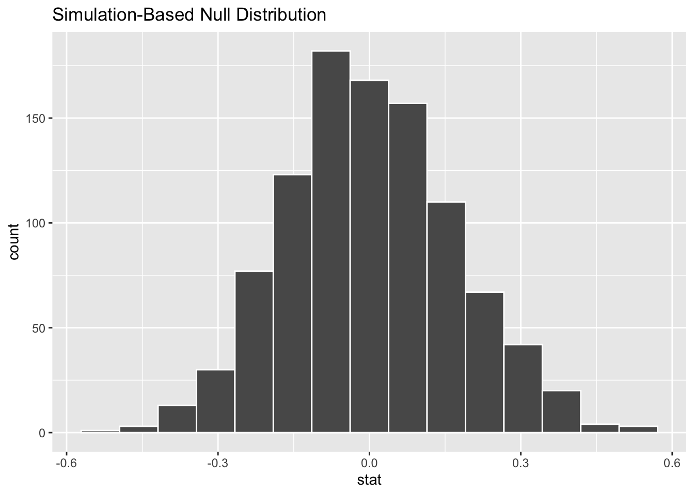
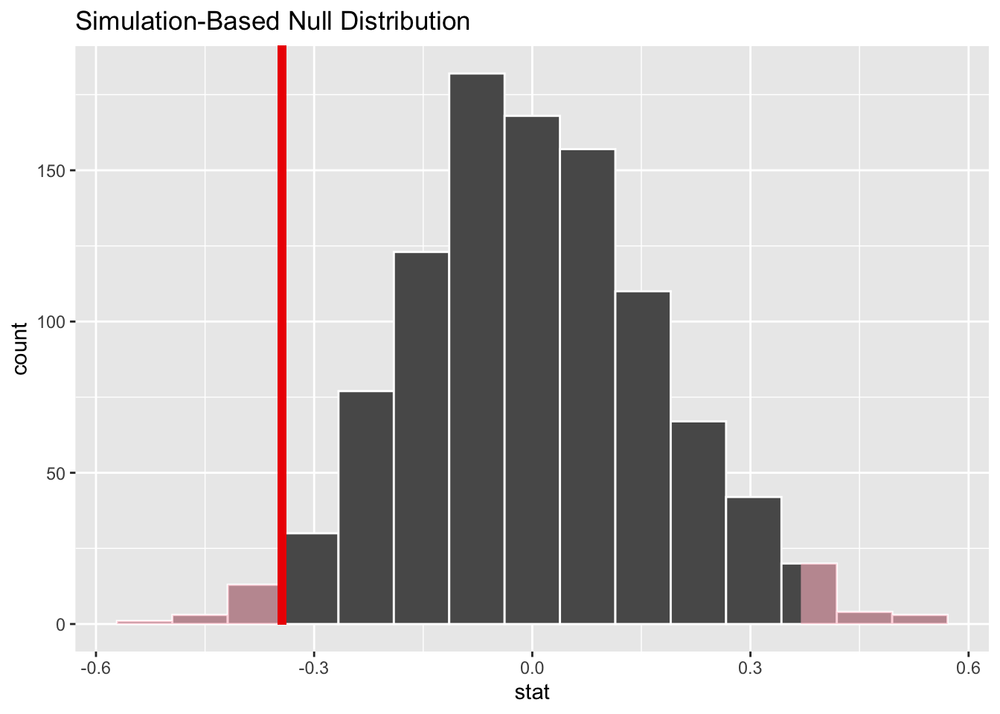
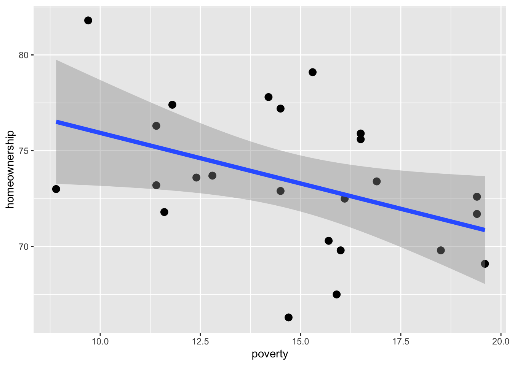

library(tidyverse)
library(infer)
library(stats2data)Queries in dplyr and Permutation Test for slopes in the Simple Linear Regression
1 libraries
2 dplyr verbs
select
mutate
group_by
summarise
filter
arrange
3 queries
3.1 query 1
Extract/list/obtain state name, homeownership and unemployment rates for counties from the state of indiana or Illionois with unemployment rate below 3%. Arrange them by descending order of homeownership.
stats2data::county %>%
select(state, homeownership, unemployment_rate) %>%
filter(state == "Indiana" | state == 'Illinois') %>%
filter(unemployment_rate < 3) %>%
arrange(desc(homeownership))# A tibble: 20 × 3
state homeownership unemployment_rate
<chr> <dbl> <dbl>
1 Illinois 83.2 2.93
2 Indiana 83.2 2.92
3 Indiana 82.9 2.55
4 Indiana 82.4 2.88
5 Indiana 80.1 2.93
6 Indiana 80 2.73
7 Indiana 79.6 2.79
8 Indiana 79.2 2.59
9 Indiana 79.1 2.83
10 Indiana 79 2.9
11 Indiana 78.3 2.62
12 Indiana 78 2.95
13 Indiana 77.7 2.95
14 Indiana 76.8 2.72
15 Indiana 75.8 2.94
16 Illinois 74.6 2.85
17 Indiana 73.6 2.97
18 Indiana 72.7 2.53
19 Indiana 72.5 2.72
20 Indiana 71.9 2.913.2 query 2
Extract/list/obtain state name, unemployment rates and metro variable for counties from the state of indiana or Illionois with unemployment rate below 3%. arrange them by metro variable where homeownership is descending within levels of metro.
stats2data::county %>%
filter(unemployment_rate < 3) %>%
select(state, homeownership, metro) %>%
filter(state == "Indiana" | state == 'Illinois') %>%
arrange(metro, desc(homeownership))# A tibble: 20 × 3
state homeownership metro
<chr> <dbl> <chr>
1 Illinois 83.2 no
2 Indiana 82.9 no
3 Indiana 80.1 no
4 Indiana 79.6 no
5 Indiana 79.2 no
6 Indiana 79 no
7 Indiana 78.3 no
8 Indiana 77.7 no
9 Indiana 76.8 no
10 Illinois 74.6 no
11 Indiana 73.6 no
12 Indiana 71.9 no
13 Indiana 83.2 yes
14 Indiana 82.4 yes
15 Indiana 80 yes
16 Indiana 79.1 yes
17 Indiana 78 yes
18 Indiana 75.8 yes
19 Indiana 72.7 yes
20 Indiana 72.5 yes 3.3 query 3
Extract all NY counties where there is a NO metropolitan city within the county.Print all rows with four columns: state, metro, poverty, homeownership.
stats2data::county %>%
filter(state == 'New York' & metro == 'no') %>%
select(state, metro, poverty, homeownership) %>%
print(n = 24)# A tibble: 24 × 4
state metro poverty homeownership
<chr> <chr> <dbl> <dbl>
1 New York no 16.5 75.6
2 New York no 16.9 73.4
3 New York no 11.6 71.8
4 New York no 18.5 69.8
5 New York no 14.5 77.2
6 New York no 15.7 70.3
7 New York no 11.4 73.2
8 New York no 14.7 66.3
9 New York no 16.5 75.9
10 New York no 8.9 73
11 New York no 19.4 72.6
12 New York no 16 69.8
13 New York no 12.8 73.7
14 New York no 12.4 73.6
15 New York no 9.7 81.8
16 New York no 14.2 77.8
17 New York no 19.6 69.1
18 New York no 16.1 72.5
19 New York no 19.4 71.7
20 New York no 15.3 79.1
21 New York no 11.8 77.4
22 New York no 14.5 72.9
23 New York no 15.9 67.5
24 New York no 11.4 76.34 inference on a subgroup
Extract all NY counties where there is a NO metropolitan city within the county, and test if slope of the simple linear regression between homeownership versus poverty is not 0 for these counties (i.e., check if there is a dependency).
4.1 parameter of interest
True slope below: \(\beta_1\).
\[ H = \beta_0 + \beta_1 p + Z \]
4.2 hypothesis and significance level.
\(H_0\): True slope in the simple linear regression model above, \(\beta_1\), is 0 (i.e., homeownership does not depend on poverty for NY counties that have no metropolitan city within them).
\(H_a\): True slope in the simple linear regression model above, \(\beta_1\), is NOT 0 (i.e., homeownership depends on poverty for NY counties that have no metropolitan city within them).
\(\alpha = 0.001\)
4.3 permutation Test
Null hypothesis suggest independence between two numerical variables. We shuffle/permute one and keep the other fixed to obtain a permutation distribution for \(\hat{beta_1}\), and this permutation distribution will approximate true sampling distribution of \(\hat{beta_1}\) under Null hypothesis of independence.
4.4 observed slope, null distribution and p-value
df <-
stats2data::county %>%
filter(state == 'New York' & metro == 'no') %>%
select(state, metro, poverty, homeownership)
obs_stat <-
df %>%
specify(poverty ~ homeownership) %>%
calculate(stat = 'slope')
obs_statResponse: poverty (numeric)
Explanatory: homeownership (numeric)
# A tibble: 1 × 1
stat
<dbl>
1 -0.344set.seed(123)
null_dist <-
df %>%
specify(poverty ~ homeownership) %>%
hypothesise(null = 'independence') %>%
generate(reps = 1000, type = 'permute') %>%
calculate(stat = 'slope')
null_dist %>%
visualise()
null_dist %>%
get_p_value(obs_stat = obs_stat, direction = 'both')# A tibble: 1 × 1
p_value
<dbl>
1 0.034null_dist %>%
visualise() +
shade_p_value(obs_stat = obs_stat, direction = 'both')
Scatterplot
df %>%
ggplot(aes(x = poverty, y = homeownership)) +
geom_point(size = 3) +
geom_jitter() +
geom_smooth(method = "lm", lwd = 2)
4.5 Decision
Since p-value of \(0.034\) > \(\alpha = 0.001\), we conclude that there is no strong evdience against the assumption of indepdence between poverty and homeownership in rural counties of NY, i.e., it could very well be the case that \(\beta_1 = 0\), and observed slope of -0.3444175 could be due to random chance and is not statistically significant.